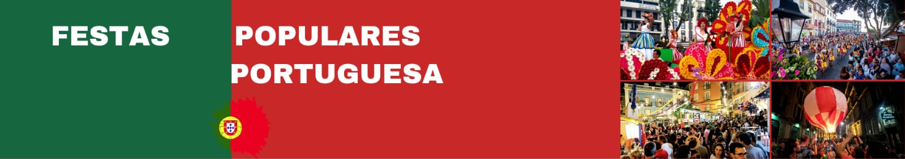
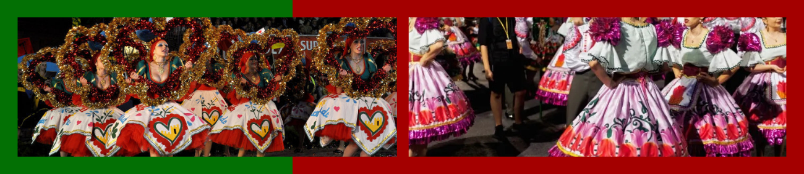
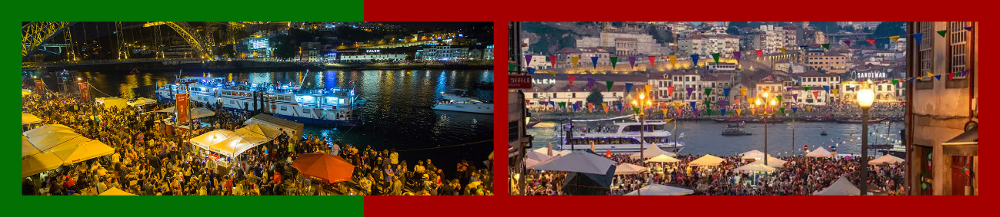
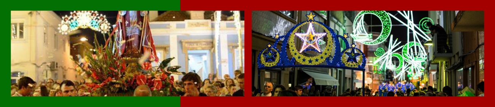
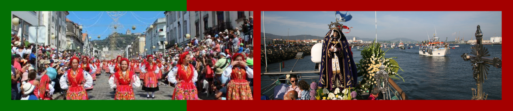
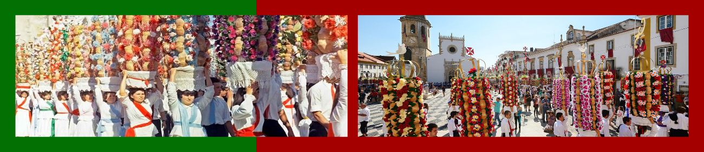
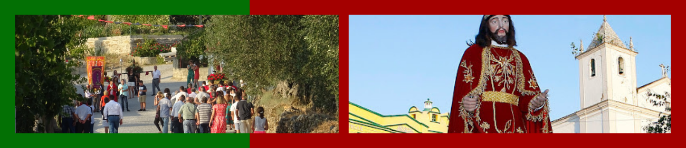
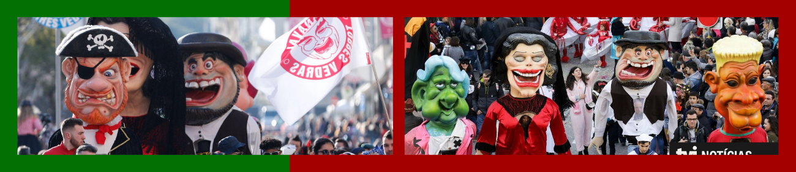
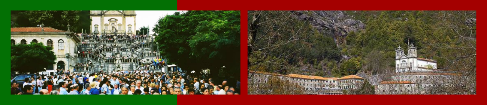
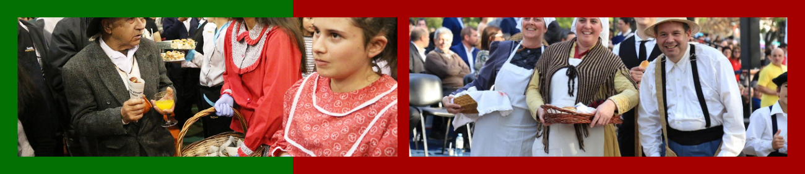

Festas Populares em Portugal
Portugal é um país com uma rica tradição de festas populares, que misturam elementos religiosos, culturais e folclóricos. De norte a sul, cada região celebra com música, dança, gastronomia típica e uma forte ligação às suas raízes.
Festas dos Santos Populares
Realizadas no mês de junho, são as festas mais conhecidas e celebradas em todo o país. Elas homenageiam três santos católicos: Santo António (13 de junho), São João (24 de junho) e São Pedro (29 de junho).
Festa de Santo António (Lisboa)
Celebrada com força na capital, Lisboa. Inclui marchas populares, casamentos coletivos (“Casamentos de Santo António”), sardinha assada, manjericos com quadras populares e muita música. Bairros como Alfama e Mouraria enchem-se de cor e animação.
Festa de São João (Porto)
Uma das maiores festas do país, atrai milhares de pessoas. Tradições incluem o uso de martelinhos de plástico, alho-porro e fogos de artifício à meia-noite. Há também lançamentos de balões de ar quente e grandes arraiais.
Festa de São Pedro (Diversas cidades)
Celebrado em várias localidades como Póvoa de Varzim, Sintra e Évora. Traz desfiles, música tradicional, sardinhadas e concursos de tronos de São Pedro.
Romarias e Festas Religiosas
Romaria de Nossa Senhora da Agonia (Viana do Castelo)
Uma das maiores romarias do país. Destaca-se pela procissão ao mar, desfiles de mordomas em trajes típicos e a presença de grupos folclóricos.
Festa dos Tabuleiros (Tomar – de 4 em 4 anos)
Uma das festas mais impressionantes de Portugal. Mulheres desfilam com tabuleiros decorados com pão e flores sobre a cabeça, representando a oferta do pão e o espírito comunitário.
Romaria de São Bartolomeu (Ílhavo)
Conhecida pelo “banho santo”, onde os romeiros tomam banho no mar com roupas, em um ritual de purificação.
Outras Festas Típicas
Carnaval de Torres Vedras
Considerado o “mais português de Portugal”. Com bonecos gigantes, sátira política, carros alegóricos e os tradicionais cabeçudos.
Festa da Senhora da Peneda (Gavieira, Arcos de Valdevez)
Romaria do Alto Minho com danças, procissões e feiras de produtos locais.
Festa da Castanha
Celebrada principalmente no norte, como em Marvão. Relacionada ao Magusto, onde se assam castanhas e se bebe jeropiga.
Curiosidades
- A gastronomia é parte essencial das festas: sardinha assada, caldo verde, pão com chouriço, vinho e doces regionais são presença obrigatória.
- Os trajes típicos, danças folclóricas e músicas regionais ajudam a preservar a identidade cultural portuguesa.
- Muitas festas têm raízes pagãs, que foram posteriormente cristianizadas com a introdução do catolicismo.